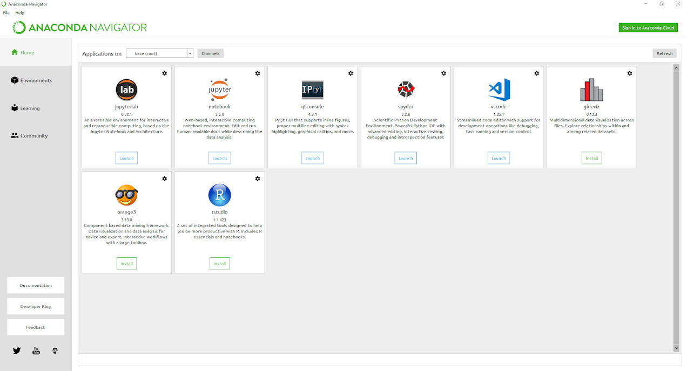

Giới thiệu về Python
Giới thiệu
Python là ngôn ngữ phổ biến nhất cho Machine Learning nói chung và Data Science nói riêng bởi tính đơn giản gọn nhẹ. Python cũng đồng thời được coi là ngôn ngữ tốt thứ 2 trong rất nhiều lĩnh vực.
Do độ phổ cập rộng rãi của Python cũng như tính hữu dụng khi làm việc, tương tác với mô trường điện toán đám mấy (cloud) và thiết kế API/deployment cho lĩnh vực AI, bên cạnh các ngôn ngữ phân tích thống kê, khám phá như R, Stata,…, ta cần làm quen và sử dụng Python để có thể mở rộng phạm vi làm việc cũng như tương tác cho các lĩnh vực khác nhau.
Tài liệu này được viết riêng dành cho nhóm phân tích dữ liệu từ R dịch chuyển sang Python để có thể dễ dàng tiếp cận, đơn giản hóa quá trình học và sử dụng một ngôn ngữ phân tích mới.
Lưu ý: Đối với các bạn sử dụng Python từ các ngôn ngữ lập trình thống kê khác như R hoặc Stata, sẽ có 1 chút khó khăn trong giai đoạn mới sử dụng ở 2 điểm
Python cài đặt và sử dụng thư viện chủ yếu trên
terminalhoặccmd, khiến cho việc cài đặt và quản lý package có chút khó khănCác đối tượng trong Python có
methodsđi kèm - đây là điều khó hiểu với những người sử dụng các ngôn ngữ phân tích khác, do chủ yếu chỉ có hàm (function) mà không cómethod
Nội dung giải thích về method sẽ được nói kỹ hơn trong các phần tiếp theo
Anaconda & Pip
Có nhiều cách để cài đặt và sử dụng Python.
Cách 1: Đi tới trực tiếp trang `https://www.python.org/downloads/ <>`__ để download cho Windows (hoặc Mac). Sau khi download xong, ta có thể dùng trực tiếp python cũng như cài đặt các thư viện đi kèm qua cmd
Cách 2: Sử dụng Anaconda, đây là 1 Platform khá nổi tiếng trong Data Science, khi cài Anaconda ta sẽ có:
Python core
Các libraries phổ biến nhất (VD: pandas, numpy, matplotlib…) mà không cần phải cài mới mỗi khi cần sử dụng
Các IDE phổ biến nhất để sử dụng Python (Jupyter Notebook, Spyder) và R (Rstudio)
Để cài đặt Anacoda, đi đến trang https://www.anaconda.com/distribution/, chọn phiên bản Windows, download và install

Thư viện trong Python
Tương tự như R, các library trong Python rất đa dạng và hỗ trợ giải quyết nhiều vấn đề khác nhau.
Các thư viện thường dùng trong Python khi phân tích dữ liệu:
numpy: Tính toán đại sốscipy: Tính toán các chỉ số khoa họcmatplotlib,seaborn,plotnine: Vẽ biểu đồpandas: Biến đổi, tính toán và tổng hợp số liệuscikit Learn: Machine learning
Cài đặt library trong Python
Phần lớn các library đều đã được cài đặt cùng với Anaconda, các library khác khi cần chúng ta có thể cài bằng pip.
VD, sử dụng Jupyter Notebook console
!pip install seaborn
Hoặc sử dụng terminal
#cài bằng pip
`pip install seaborn`
# cài bằng anaconda
`conda install seaborn`
Phân biệt function/modules/packages/library: Khi làm việc với các thư viện trong python, ta sẽ thấy có 4 nhóm thuật ngữ sau mà có thể gây nhầm lẫn là hàm, module, package & library. Phân biệt 4 nhóm như sau
Function: Hàm - một câu lệnh để giải quyết một hoặc 1 số vấn đềModule: đơn giản là 1 file.pychứa 1 hoặc nhiềufunction/classnhằm mục đích tái sử dụng sau này, một module có thể chứa nhiều hàmPackage: Là một thư mục chứa:Nhiều Python module.
1 file đặc biệt là
__init.py__
VD: Python package trong windows thường được chứa tại C:\Users\user\AppData\Local\Continuum\anaconda3\Lib\site-packages - library: Tương tự như package. Tuy nhiên, khi nói về library, ta nói về package đã được download và cài đặt xong
Import Modules/packages
[18]:
# Import cả package, khi cần sử dụng function, gọi tên package trước
import numpy as np
np.sqrt(9)
[18]:
3.0
[19]:
# Chỉ import function trong packages
from numpy import sqrt
sqrt(9)
[19]:
3.0
Cài đặt packages offline
Cài đặt với conda
Download package từ trang web: https://anaconda.org
Cài đặt với câu lệnh sau
conda install --offline jupyter_contrib_core-0.3.3-py36_1.tar.bz2
Cài đặt với pip
Clone folder từ github
Mở terminal/cmd trong thư mục chưa project
Thực hiện câu lệnh sau:
pip install -e nbextensions
Kiểm tra thư viện Python
[20]:
import site
site.getsitepackages()
[20]:
['C:\\Users\\Hoang Duc Anh\\AppData\\Local\\Programs\\Python\\Python311',
'C:\\Users\\Hoang Duc Anh\\AppData\\Local\\Programs\\Python\\Python311\\Lib\\site-packages']
Ta có thể copy thư viện Python như làm việc với R
Một số câu lệnh cơ bản
Thư mục đang làm việc
Kiểm tra thư mục đang làm việc
[21]:
cwd = %pwd
print(cwd)
D:\01-github\ds-book-python\_source
[22]:
# hoặc
import os
cwd = os.getcwd()
print(cwd)
D:\01-github\ds-book-python\_source
[23]:
# List các file trong thư mục hiện hành trong jupyter notebook %ls
os.listdir()[0:10]
[23]:
['.ipynb_checkpoints',
'99_dataset',
'boxplot.png',
'chart.png',
'conf.py',
'debug.log',
'final_model.sav',
'flask-api.py',
'Image',
'index.rst']
Cách xuống dòng
Ta có thể xuống dòng với dấu \ và không có dấu cách đằng sau
[24]:
7 + \
8
[24]:
15
Comment với dâu
#
[25]:
8 * 9 #comment here
[25]:
72
Help trong python
Tương tự như R, ta có thể truy cập và tìm kiếm các tài liệu sẵn có trong một hàm. Các tài liệu đó được viết dưới dạng đặc biệt được gọi là docs string, viết trong """..."""
Ta có thể đọc tài liệu với cấu trúc câu lệnh function??
[26]:
import numpy as np
np.square??
Call signature: np.square(*args, **kwargs)
Type: ufunc
String form: <ufunc 'square'>
File: c:\users\hoang duc anh\appdata\local\programs\python\python311\lib\site-packages\numpy\__init__.py
Docstring:
square(x, /, out=None, *, where=True, casting='same_kind', order='K', dtype=None, subok=True[, signature, extobj])
Return the element-wise square of the input.
Parameters
----------
x : array_like
Input data.
out : ndarray, None, or tuple of ndarray and None, optional
A location into which the result is stored. If provided, it must have
a shape that the inputs broadcast to. If not provided or None,
a freshly-allocated array is returned. A tuple (possible only as a
keyword argument) must have length equal to the number of outputs.
where : array_like, optional
This condition is broadcast over the input. At locations where the
condition is True, the `out` array will be set to the ufunc result.
Elsewhere, the `out` array will retain its original value.
Note that if an uninitialized `out` array is created via the default
``out=None``, locations within it where the condition is False will
remain uninitialized.
**kwargs
For other keyword-only arguments, see the
:ref:`ufunc docs <ufuncs.kwargs>`.
Returns
-------
out : ndarray or scalar
Element-wise `x*x`, of the same shape and dtype as `x`.
This is a scalar if `x` is a scalar.
See Also
--------
numpy.linalg.matrix_power
sqrt
power
Examples
--------
>>> np.square([-1j, 1])
array([-1.-0.j, 1.+0.j])
Class docstring:
Functions that operate element by element on whole arrays.
To see the documentation for a specific ufunc, use `info`. For
example, ``np.info(np.sin)``. Because ufuncs are written in C
(for speed) and linked into Python with NumPy's ufunc facility,
Python's help() function finds this page whenever help() is called
on a ufunc.
A detailed explanation of ufuncs can be found in the docs for :ref:`ufuncs`.
**Calling ufuncs:** ``op(*x[, out], where=True, **kwargs)``
Apply `op` to the arguments `*x` elementwise, broadcasting the arguments.
The broadcasting rules are:
* Dimensions of length 1 may be prepended to either array.
* Arrays may be repeated along dimensions of length 1.
Parameters
----------
*x : array_like
Input arrays.
out : ndarray, None, or tuple of ndarray and None, optional
Alternate array object(s) in which to put the result; if provided, it
must have a shape that the inputs broadcast to. A tuple of arrays
(possible only as a keyword argument) must have length equal to the
number of outputs; use None for uninitialized outputs to be
allocated by the ufunc.
where : array_like, optional
This condition is broadcast over the input. At locations where the
condition is True, the `out` array will be set to the ufunc result.
Elsewhere, the `out` array will retain its original value.
Note that if an uninitialized `out` array is created via the default
``out=None``, locations within it where the condition is False will
remain uninitialized.
**kwargs
For other keyword-only arguments, see the :ref:`ufunc docs <ufuncs.kwargs>`.
Returns
-------
r : ndarray or tuple of ndarray
`r` will have the shape that the arrays in `x` broadcast to; if `out` is
provided, it will be returned. If not, `r` will be allocated and
may contain uninitialized values. If the function has more than one
output, then the result will be a tuple of arrays.
Sử dụng tab để tự động điền các hàm hoặc khi import thư viện
Ví dụ: np.TAB
from sklearn import da<TAB>
Chạy external code trên notebook
Chạy file .py
%run script.py
Chạy file .ipynb
%run file.ipynb
Hiển thị code đã chạy
Jupyter notebook cho phép hiển thị các đoạn cell đã chạy trong cùng notebook
[27]:
#| eval: false
print(In[8])
#| eval: false
# List các file trong thư mục hiện hành trong jupyter notebook %ls
os.listdir()
Làm việc với shell
Python cho phép làm việc với shell trong Python
ls
Để gán kết quả từ shell, sử dụng toán tử !
my_content = !ls
len(my_content)
Kiểm tra thời gian chạy code
[28]:
#| eval: false
%time sum(range(100))
CPU times: total: 0 ns
Wall time: 0 ns
[28]:
4950